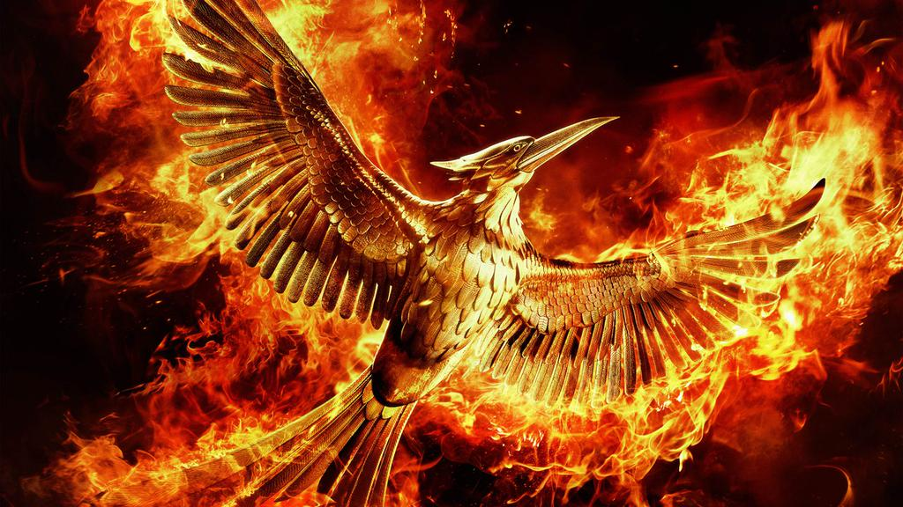

Голодные игры — ежегодный турнир в Панеме. Он представляет собой жестокое реалити-шоу на выживание, в котором участвуют по два представителя (юноша и девушка) от каждого дистрикта. Турнир транслируется по телевидению и обязателен к просмотру всем гражданам.

История создания
За семьдесят четыре года до событий книги "Голодные игры" дистрикт 13 поднял восстание против власти Капитолия. Очень скоро к нему присоединились и остальные дистрикты ( все кроме второго). Однако после уничтожения дистрикта 13 сопротивление было подавлено.
После этого Капитолий начал устраивать Голодные игры, собирая по одному юноше и одной девушке из каждого дистрикта для участия в них. Таким образом он демонстрировал свою власть над гражданами, а трансляция соревнований отвлекала жителей от серых будней.